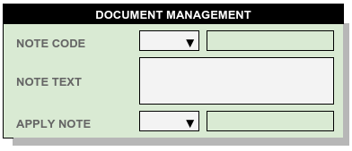
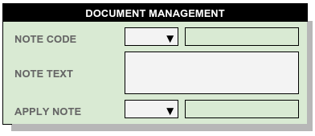

Customer Accounts¶
Accounts separate warehouse products into reporting and accounting groups. Third-party warehouses invoice services individually by account, while private warehouses may separate departmental goods into accounts for reporting and cost control.
Account Identification¶
The warehouse assigns an identifier to each account, and associated with this identifier is a literal account name.
Using the Contacts and Addresses form, between one and four addresses may be entered for an account identifier. A type code determines how each address is used in the program. The four type codes are:
A – The primary account mailing address for inventory reporting and correspondence. This address is required for every account, as it appears on Bill of Lading and Warehouse Receipt forms.
ST – An optional package shipment address is recorded in case the account’s mailing address is a P.O. box.
BT – Invoices may require a separate mailing address, even if it just means using a different contact line such as ATTN: ACCOUNTS PAYABLE.
PF – All Prepaid Bills of Lading for an account will print the account’s PF address in the Send Freight BIll To area, if it exists. Otherwise the account’s Bill To (BT) or mailing (A) address will be printed. (See Freight Payment, below.)
Note
Corporations often use an auditing service to review freight invoices, which requires the separate address. Occasionally personnel may refer to this service by the misnomer “Third Party Prepaid,” maybe because “Third Party” is how their own software works to apply a separate freight billing address.
Account Documents¶
A common clerical error in warehousing is to double-ship a customer’s order. This error can occur either when a customer sends a set of orders twice, or when the warehouse enters the orders twice. Neither of these situations may be avoidable, so the solution to this problem must lie elsewhere.
WARES helps avoid this costly mistake by checking for duplication of the combination of account, consignee, and reference numbers when saving a document. Suspected duplicate documents are pended, and an error message issues to alert the user.
Find Duplicates – allows duplicate detection to be configured according to each customer’s requirements.
Freight Payment – These terms apply to Bill of Lading documents produced for outbound shipments. There are three general categories of freight payment terms: Prepaid (paid by the shipping Account), Collect (paid by the consignee shipper), and Third Party (Paid by a broker or other party).
Notes – Messages and standing instructions to the warehouse or to a carrier can be entered here to apply on documents for the account.
Account Billing¶

WARES calculates and invoices warehousing service charges based on receiving and shipping activity, as well as recurring storage charges for space usage. The Account Billing section defines the billing process for a customer using the following entries:
- Terms – print on an invoice to establish payment terms. Within WARES, payment terms are considered descriptive and aging is performed by invoice date.
- Invoicing Cycle – can determine the frequency of activity invoicing on an account: Daily, Weekly, Semi-monthly, Monthly, or On Demand. (Generally recurring storage is invoiced separately from activity, and it is controlled separately.)
- PO Number – A customer may specify a PO Number to appear on invoices, and otherwise they may not get paid. Enter the PO Number here.
- Minimum Storage Invoice – To discourage unprofitable customer relationships, the warehouse may impose a minimum monthly fee for recurring storage services.
- Percent Handling Income Deferred – Based on an account’s handling rates and the amount of goods in storage at the end of a month, a deferred income report will determine the warehouse liability for handling services which have been invoiced, but which are yet to be performed.
Account Storage¶

Third-party warehouses bill for the storage space an account uses. Customarily a warehouse calculates the number of units of inventory in the warehouse at the start of each month, and bills in advance for recurring storage. Similarly the warehouse bills an additional storage charge for each unit of inventory received during a month.
This section codifies the contractual terms for calculating storage charges on an account, as described by the following items.
- Receiving Storage – The receiving storage charge may be determined by one of three methods: (F)ull month applies a full charge regardless of day of receipt; (S)plit month applies a full charge for receiving on month days 1 through 15, and half that charge for receiving on days 16 through the end of the month; (P)rorated multiplies the storage charge by the ratio of the days remaining in the month to the number of days in the month.
- Recurring Type – Sets the method of recurring calculation method as one of the following options: (E)nding balance for advance billing of calendar month storage, (S)tarting balance for arrears billing of the previous month, and (A)nniversary for calculating the recurring storage on each lot according to the balance on succeeding month-days following receipt. [1]
- Free Days grants a customer a number of days before receiving and recurring storage charges will be applied to received goods, while
- Grace Days waives receiving storage for goods within the grace period at the end of a month.
- Declared Value, Per, and Surcharge specify a limitation to the liability a warehouser has for an account’s goods, and expresses the storage rate increase when the declared value of goods exceeds that limitation. [2]
Account Basic views¶
 

The warehouse may wish to restrict access to customer billing information. Clerical personnel with restricted access should see only the basic account information, as shown in the sidebar.
Accounts Database Schema¶
The Accounts database column schema can be found at ACCOUNTS Data Table Columns.
| [1] | Anniversary recurring calculation is commonly used in cold storage warehouses which handle brokered goods. However, the results for this calculation method are problematic for a number of reasons:
|
| [2] | Section 7-204 of the Uniform Commercial Code sets forth the warehouser’s standard of care, and permits the warehouser to set a limit on the amount of damages for which he will be responsible. This limit must be expressed per article, per item, or per weight; and the account must be allowed to declare a higher limit (for which he may pay a correspondingly higher charge). The limitation of damages is not a legally required element of a receipt, but it must be stated on the receipt for the warehouser to claim this protection. This limitation is expressed in large print on the warehouse receipt because of its importance to the warehouse. The limitation from the Warehouse Company Information will print on the warehouse receipt unless a different declared value limit is entered on the account or on specific product information records. |